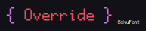

Cpp Override User Guide

Cpp Override is a C++ 11 Compatible Framework that allows you to override function behaviors.
Similar to mocking but with greater flexibility and customizations
📦️ 1. Installation
Cpp Override is hosted on github at https://github.com/Neko-Box-Coder/CppOverride. Feel free to check out the source code yourself.
To start off, you first need to clone the repository with
git submodule add https://github.com/Neko-Box-Coder/CppOverride.git <folder name>
git submodule update --init --recursive
This framework is header only so you can just include it with
CppOverride.hpp in Include_SingleHeader or Include_MultiHeader
Additionally, you can add the include directory with
AddSubDirectory(CppOverride)TargetLinkLibrary(YourTarget CppOverride)
📢 2. Declare Override Instance
In order to override anything, we will first need an override instance to store all the override information that the function and test can reference from.
Global / File Scope
Declaring it in global scope makes it easy to be accessed from both the function and the test.
CO_DECLARE_INSTANCE(MyOverrideInstance);
//Or this if you want to reference an instance declared somewhere else
extern CO_DECLARE_INSTANCE(MyOverrideInstance);
Class Scope
Declaring it in class scope is more similar to the traditional mock class approach
You can do so by inheriting from CppOverride::Overridable
Or if you want to declare it manually, you can do
class YourClass
{
private:
CO_DECLARE_MEMBER_INSTANCE(MyOverrideInstance);
...
public:
CO_DECLARE_OVERRIDE_METHODS(MyOverrideInstance);
...
};
Tip
Declaring override instance in Global/File scope is recommended for overriding member functions. This is because it allows you to override constructor and destructor. If the override information is saved inside the class, that information is bounded to the object lifetime.
⚙️ 3. Insert Override Implementations
After declaring the override instance, we are now ready to override any function using override implementations macros
There are 2 variants of the macro, one is CO_OVERRIDE_MEMBER_METHOD(...) and the other one is
CO_OVERRIDE_METHOD(...).
The difference between them is that the CO_OVERRIDE_MEMBER_METHOD(...) variant captures the
object pointer (this) where as the CO_OVERRIDE_METHOD(...) one does not.
You can easily override a function fully with the macros below:
CO_OVERRIDE_METHOD(Override Instance, Return Type, Function Name, (Args Types))
CO_OVERRIDE_METHOD(Override Instance, Return Type, Function Name, (Args Types), Function Prepend)
CO_OVERRIDE_METHOD(Override Instance, Return Type, Function Name, (Args Types), Function Prepend, Function Append)
CO_OVERRIDE_METHOD(Override Instance, Return Type, Function Name, (Args Types), Function Prepend, Function Append, (Args Defaults))
CO_OVERRIDE_MEMBER_METHOD(Override Instance, Return Type, Function Name, (Args Types))
CO_OVERRIDE_MEMBER_METHOD(Override Instance, Return Type, Function Name, (Args Types), Function Prepend)
CO_OVERRIDE_MEMBER_METHOD(Override Instance, Return Type, Function Name, (Args Types), Function Prepend, Function Append)
CO_OVERRIDE_MEMBER_METHOD(Override Instance, Return Type, Function Name, (Args Types), Function Prepend, Function Append, (Args Defaults))
Macro Arguments:
Override Instance: The override instance to get the override data from. When inheritingCppOverride::Overridable, you can just pass*this.Return Type: The return type of the function we are overridingFunction Name: The name of the function we are overriding(Args Types): List of arguments types wrapped in()separated by comma (,) to this function.Function Prepend(Optional): Prepend tokens to the functionFunction Append(Optional): Append tokens to the function(Args Defaults)(Optional): List of arguments defaults wrapped in()separated by comma (,) to this function. The syntax is just anything after the argument name. For example an argumentint arg = 2would be= 2. Nothing need to be put in for the arguments that do not have defaults. The Number of commas here MUST match the commas in(Args Types).
Example
CO_DECLARE_INSTANCE(MyOverrideInstance);
class MockMyClass : public MyClass
{
//int MemberFunction(int value1, float value2)
CO_OVERRIDE_MEMBER_METHOD(MyOverrideInstance, int, MemberFunction, (int, float))
//void MemberFunction2(float& value1, int* value2) const
CO_OVERRIDE_MEMBER_METHOD(MyOverrideInstance, void, MemberFunction2, (float&, int*),
/* no prepend */, const)
//virtual int MemberFunction3(int value1, float value2 = 1.f) const override
CO_OVERRIDE_MEMBER_METHOD(MyOverrideInstance, int, MemberFunction3, (int, float),
virtual, const override, (/* no default */, = 1.f))
};
//MockMyClass CloneMockClass(const MockMyClass& other);
CO_OVERRIDE_METHOD(MyOverrideInstance, MockMyClass, CloneMockClass, (const MockMyClass&));
For overriding constructor and destructor, a special macro is needed because they don't return
anything, not even void.
CO_OVERRIDE_MEMBER_METHOD_CTOR(Override Instance, Class Name, (Args Types))
CO_OVERRIDE_MEMBER_METHOD_CTOR(Override Instance, Class Name, (Args Types), Function Prepend)
CO_OVERRIDE_MEMBER_METHOD_CTOR(Override Instance, Class Name, (Args Types), Function Prepend, Function Append)
CO_OVERRIDE_MEMBER_METHOD_CTOR(Override Instance, Class Name, (Args Types), Function Prepend, Function Append, (Args Defaults))
CO_OVERRIDE_MEMBER_METHOD_DTOR(Override Instance, Class Name)
CO_OVERRIDE_MEMBER_METHOD_DTOR(Override Instance, Class Name, Function Prepend)
CO_OVERRIDE_MEMBER_METHOD_DTOR(Override Instance, Class Name, Function Prepend, Function Append)
This macro arguments are mostly the same as CO_OVERRIDE_METHOD(...) and
CO_OVERRIDE_MEMBER_METHOD(...), only with slight differences.
Class Nameinstead ofFunction Name- Destructor version (
CO_OVERRIDE_MEMBER_METHOD_DTOR(...)) doesn't need any(Args Types)nor(Args Defaults), since you cannot pass any arguments to a destructor.
Example
Important
If you have comma in your return type (such as std::tuple<int, int>), you need to add an extra
parenthesis to protect it against macro.
For example:
You can also override any existing functions with CO_OVERRIDE_IMPL(...).
This is what CO_OVERRIDE_METHOD(...) use under the hood.
Example
For overriding member functions, you can use CO_OVERRIDE_MEMBER_IMPL(...).
This is what CO_OVERRIDE_MEMBER_METHOD(...) use under the hood.
For constructors and destructors:
Example
#include "CppOverride.hpp"
int SomeClass::MemberFunction(int value1, float value2)
{
CO_OVERRIDE_MEMBER_IMPL(MyOverrideInstance, int, (value1, value2));
return value1 * value2;
}
SomeClass::SomeClass(int value1, float value2)
{
CO_OVERRIDE_MEMBER_IMPL_CTOR_DTOR(MyOverrideInstance, (value1, value2));
}
SomeClass::~SomeClass()
{
CO_OVERRIDE_MEMBER_IMPL_CTOR_DTOR(MyOverrideInstance, ());
}
Important
Similar to CO_OVERRIDE_METHOD(...),
any type that has a comma in it needs to be protected with parenthesis
For a function like
It will be
🧲 4. Setup Override Actions
Now we have inserted the override implementations, we will just need to interact with the override instance to control the override functions when called.
To start setting up the override actions, call CO_SETUP_OVERRIDE macro
This can be chained with different actions like this
CO_SETUP_OVERRIDE(Override Instance, Function Name)
.WhenCalledWith(Values...)
.Returns<Return Type>(Return Value);
//etc...
Example
#include "CppOverride.hpp"
#include <iostream>
CO_DECLARE_INSTANCE(MyOverrideInstance);
int FreeFunction(int value1, float value2)
{
CO_OVERRIDE_IMPL(MyOverrideInstance, int, (value1, value2));
return value1 * value2;
}
int main()
{
CO_SETUP_OVERRIDE(MyOverrideInstance, FreeFunction)
.WhenCalledWith(1, 2.f)
.Returns<int>(42);
int result = FreeFunction(1, 2.f);
std::cout << "result: " << result << std::endl; //result: 42
result = FreeFunction(2, 3.f);
std::cout << "result: " << result << std::endl; //result: 6 (2 * 3.f)
}
If you have your override instance declared inside a class or inheriting from CppOverride::Overridable,
pass that object as Override Instance instead
Example
//YourClass.hpp
#include "CppOverride.hpp"
class YourClass
{
private:
CO_DECLARE_MEMBER_INSTANCE(MyOverrideInstance);
...
public:
CO_DECLARE_OVERRIDE_METHODS(MyOverrideInstance);
int MemberFunction(int value1, float value2);
...
};
//Or
class YourClass : public CppOverride::Overridable
{
...
};
...
//main.cpp
#include "YourClass.hpp"
#include "CppOverride.hpp"
#include <iostream>
int main()
{
YourClass classObject;
CO_SETUP_OVERRIDE(classObject, MemberFunction)
.WhenCalledWith(1, 2.f)
.Returns<int>(42);
...
}
If you want to override a function for a specific object, you can specify with
Note
This requires CO_OVERRIDE_MEMBER_IMPL(...) (Or CO_OVERRIDE_MEMBER_METHOD(...))
to be used instead of CO_OVERRIDE_IMPL(...)
Example
int main()
{
YourClass classObject;
YourClass classObject2;
CO_SETUP_OVERRIDE(classObject, MemberFunction)
.WhenCalledWith(1, 2.f)
.OverrideObject(&classObject2)
.Returns<int>(42);
int result = classObject.MemberFunction(1, 2.f); //Won't override
result = classObject2.MemberFunction(1, 2.f); //Will override
}
Override Result
Everytime where there's an attempt to override the function (assuming the function name and types match), the result of it can be recorded, whether it was successful or not.
To do so, we first need to create a result object that holds all the results.
auto result = CppOverride::CreateOverrideResult();
//Or
std::shared_ptr<CppOverride::OverrideResult> result = CppOverride::CreateOverrideResult();
Info
The reason why shared pointer is used is because when we assign this result object to an override action, and the override instance holds the reference of it. If the result object goes out of scope, the program will crash when the override instance is trying to dereference and modify this result object
To bind the result object to an override action:
Each time when there's an override attempt (whether successful or not), it will add to the list of override status.
To get the list of status:
List of possible status
enum class OverrideStatus
{
//Default status.
// Any matching override will modify the status to not be this value.
// If the status is not modified (i.e. staying in this value),
// Could be one of these reasons:
// - Function name not matching
// - Argument types not matching
// - Return type not matching
NO_OVERRIDE,
//The last override was successful.
// Please reset the status to NO_OVERRIDE before every expected override.
// If the status is not reset, it will not be modified if no matching override is found.
OVERRIDE_SUCCESS,
MATCHING_CONDITION_VALUE_FAILED,
MATCHING_CONDITION_ACTION_FAILED,
MATCHING_OVERRIDE_TIMES_FAILED,
//------------------------------------------
//Internal error
//------------------------------------------
INTERNAL_MISSING_CHECK_ERROR,
//------------------------------------------
//Unsupported operation errors
//------------------------------------------
MODIFY_NON_ASSIGNABLE_ARG_ERROR,
MODIFY_CONST_ARG_ERROR,
CHECK_ARG_MISSING_INEQUAL_OPERATOR_ERROR,
};
Here are a list of helper functions to perform the most common actions:
class OverrideResult
{
//Returns true if status list is not empty and last one is OVERRIDE_SUCCESS
bool LastStatusSucceed();
//Returns true if status list is not empty and last one is **NOT** OVERRIDE_SUCCESS
bool LastStatusFailed();
//Returns the last status if the status list is not empty, otherwise NO_OVERRIDE
OverrideStatus GetLastStatus();
//Returns true if the status list contains said status
bool HasStatus(OverrideStatus status);
//Returns the number of status in the status list
int GetStatusCount();
//Returns the number of statuses that are OVERRIDE_SUCCESS
int GetSucceedCount();
//Returns the number of statuses that are **NOT** OVERRIDE_SUCCESS
int GetFailedCount();
//Removes all the status from the status list
void ClearStatuses()
//Get a copy of the status list
std::vector<OverrideStatus> GetAllStatuses()
};
Example
CO_DECLARE_INSTANCE(MyOverrideInstance);
int FreeFunction(int value1, float value2);
...
using namespace CppOverride;
std::shared_ptr<OverrideResult> result = CreateOverrideResult();
CO_SETUP_OVERRIDE(MyOverrideInstance, FreeFunction)
.WhenCalledWith(2, 3.f)
.Returns<int>(1)
.AssignResult(result);
int ret1 = FreeFunction(1, 2.f);
assert(result->GetLastStatus() == OverrideStatus::MATCHING_CONDITION_VALUE_FAILED);
ret1 = FreeFunction(2, 3.f);
assert(result->LastStatusSucceed());
You can convert the result status to string with
Debug Override
If for any reason, it is unclear why the override did not get triggered and the override result
did not give any useful information. You can force CppOverride to output verbose logs by
defining CO_SHOW_OVERRIDE_LOG 1 before #include "CppOverride.hpp".
This will show all the debug logs on each stage of selecting override data and what conditions are not met.
Disable Overrides
By default, the override implementations won't do anything if nothing is setup, which will behave exactly as the original function.
However, if you want zero overhead when the override is disabled, you can define CO_NO_OVERRIDE
before including the header file.
//Just define CO_NO_OVERRIDE before including "CppOverride.hpp" or in compile definitions
//So like this:
#define CO_NO_OVERRIDE
#include "CppOverride.hpp"
To remove the override setups for a particular function, call CO_REMOVE_OVERRIDE_SETUP macro
Example
Similarly, to remove all override setups, call CO_CLEAR_ALL_OVERRIDE_SETUP macro
Example
↩️ 5. Override Returns
You can override what a function returns by providing a value.
Example
Important
The override return type must match exactly to the function return type, otherwise the override will not be triggered
Note
For a function that returns void, you can also override the return to return early
You can also set the return value by specifying a function, normally lambda.
CO_SETUP_OVERRIDE(Override Instance, Your Function)
.ReturnsByAction<Return Type>
(
void(void* instance, const std::vector<void*>& args, void* out) Function
);
When the override is triggered, the function is called with the following arguments:
void* instance: The object that is being overridden, only set whenCO_OVERRIDE_IMPL_INSTANCE(...)orCO_OVERRIDE_IMPL_INSTANCE_CTOR_DTOR(...)are used, otherwisenullptr.const std::vector<void*>& args: List of pointers to the arguments. You must cast them to the original type pointers in order to use them.void* out: The pointer to the return value to be returned. You must cast it to back to return type pointer in order to use it.
Example
CO_DECLARE_INSTANCE(MyOverrideInstance);
...
int SomeClass::MemberFunction(int value1, float value2);
...
CO_SETUP_OVERRIDE(MyOverrideInstance, MemberFunction)
.ReturnsByAction<int>
(
[](void* instance, const std::vector<void*>& args, void* out)
{
//instance is same as "this" in MemberFunction
std::cout << "instance: " << instance << std::endl;
//*args[0] is value1
std::cout << "*args[0]: " *static_cast<int*>(args.at(0)) << std::endl;
//*args[1] is value2
std::cout << "*args[1]: " *static_cast<float*>(args.at(1)) << std::endl;
//out is what we return
*static_cast<int*>(out) = 42;
}
);
...
SomeClass someObject;
std::cout << someObject.MemberFunction(1, 2.f) << std::endl; //42
📬️ 6. Override Arguments Values
CO_SETUP_OVERRIDE(Override Instance, Your Function)
.SetArgs<Function Argument Types>(Argument Values);
The argument values can be a dereference version of the corresponding argument type.
For example, an integer pointer type can be set with an integer value.
Example
Important
The template types of the argument specified must match the function argument types exactly.
You can also use CO_ANY_TYPE and CO_DONT_SET to not set some of the arguments.
Example
CO_DECLARE_INSTANCE(MyOverrideInstance);
...
void FreeFunction(float& value1, int* value2);
...
CO_SETUP_OVERRIDE(MyOverrideInstance, FreeFunction)
.SetArgs<CO_ANY_TYPE, int*>(CO_DONT_SET, 3);
In this case, the first argument is not touched, while the second argument is set to 3.
Note
It is common to pair .SetArgs with .Returns so that the execution doesn't continue when
we finish overriding the arguments.
Given we have this
CO_DECLARE_INSTANCE(MyOverrideInstance);
void FreeFunction(float& value1, int* value2)
{
CO_OVERRIDE_IMPL(MyOverrideInstance, void, (value1, value2));
std::cout << "Rest of the OverrideMyArgs execution..." << std::endl;
value1 = *value2;
...
}
...
CO_SETUP_OVERRIDE(MyOverrideInstance, FreeFunction)
.SetArgs<float&, int*>(1.f, 3);
...
FreeFunction(value1, value2);
What will happen when we call the function is
- Override occurs,
value1is set to1.fandvalue2is set to3 - Execution does not stop
- Output: "Rest of the OverrideMyArgs execution..."
value1 = *value2;happens, settingvalue1to*value2which is3
To return early after we set the arguments, we can do
Which will return early after step 1.Similar to override return, you can also set the argument values by specifying a function, normally lambda.
CO_SETUP_OVERRIDE(Override Instance, Your Function)
.SetArgsByAction<Function Argument Types>
(
void(void* instance, std::vector<void*>& args) Function
);
This the same as the ReturnsByAction, but without the need of modifying any return value.
Again, you must cast the arguments pointers to their original type pointers in order to use them.
Example
CO_DECLARE_INSTANCE(MyOverrideInstance);
...
void FreeFunction(float& value1, int* value2);
...
CO_SETUP_OVERRIDE(MyOverrideInstance, FreeFunction)
.SetArgsByAction<float&, int*>
(
[](void* instance, std::vector<void*>& args)
{
(void)instance; //This will be nullptr in this case
//Pointer to float& is just float*
*static_cast<float*>(args.at(0)) = 1.f;
//Pointer to int* is int**
**static_cast<int**>(args.at(1)) = 2;
}
);
Similar to .SetArgs<...>(...), you can use CO_ANY_TYPE to match any type or to indicate
that it won't be set.
📐 7. Override Rules And Actions
Just like any mocking library, you can also control when and how the override functions will behave, as well as registering callbacks when the override is successful or not.
When Called With
This triggers the override only when the value matches. This also auto dereference any pointer to match for the value if possible, if not it will then try to match pointer instead.
CO_SETUP_OVERRIDE(Override Instance, Your Function)
.WhenCalledWith<Condition Types>(Condition Values)
Example
If you don't care about a certain parameter, you can use CO_ANY_TYPE and CO_ANY to skip it
Example
CO_DECLARE_INSTANCE(MyOverrideInstance);
int FreeFunction(int value1, float value2);
...
CO_SETUP_OVERRIDE(MyOverrideInstance, FreeFunction)
.WhenCalledWith<int, CO_ANY_TYPE>(2, CO_ANY)
.Returns<int>(1);
int ret1 = OverrideMyReturnValue(2, 3.f); //Returns 1
int ret2 = OverrideMyReturnValue(2, 2.f); //Returns 1
Times
This allows override to be triggered for the set amount of times.
Example
If
This sets the condition to decide to run the override action or not
CO_SETUP_OVERRIDE(Override Instance, Your Function)
.If
(
bool(void* instance, const std::vector<void*>& args) Function
)
Example
CO_DECLARE_INSTANCE(MyOverrideInstance);
int FreeFunction(int value1, float value2);
...
CO_SETUP_OVERRIDE(MyOverrideInstance, FreeFunction)
.If
(
[](void* instance, const std::vector<void*>& args)
{
if(*static_cast<int*>(args.at(0)) == 1)
return true;
else
return false;
}
)
.Returns<int>(1);
int ret1 = OverrideMyReturnValue(1, 2.f); //Returns 1
int ret2 = OverrideMyReturnValue(2, 3.f); //Won't return 1
When Called Expectedly Do
This allows you to setup a function callback that gets called before an override will be used
CO_SETUP_OVERRIDE(Override Instance, Your Function)
.WhenCalledExpectedly_Do
(
void(void* instance, const std::vector<void*>& args) Function
);
Example
CO_DECLARE_INSTANCE(MyOverrideInstance);
int FreeFunction(int value1, float value2);
...
bool called = false;
CO_SETUP_OVERRIDE(MyOverrideInstance, FreeFunction)
.WhenCalledWith(2, 3.f)
.Returns<int>(1)
.WhenCalledExpectedly_Do
(
[&called](void* instance, const std::vector<void*>& args)
{
called = true;
//...
}
);
int ret1 = FreeFunction(1, 2.f); //called is still false
int ret2 = FreeFunction(2, 3.f); //called is true and ret2 is 1 now
Tip
If you just want to see if the function is called without overriding anything, simple don't override anything. So like:
Otherwise Do Function / Lambda
This allows you to setup a function callback that gets called when an override can't be used because of failing to meet conditions or failing to match the correct argument values.
CO_SETUP_OVERRIDE(Override Instance, Your Function)
.Otherwise_Do
(
void(void* instance, const std::vector<void*>& args) Function
);
Example
CO_DECLARE_INSTANCE(MyOverrideInstance);
int FreeFunction(int value1, float value2);
...
bool called = false;
CO_SETUP_OVERRIDE(MyOverrideInstance, FreeFunction)
.WhenCalledWith(2, 3.f)
.Returns<int>(1)
.Otherwise_Do
(
[&called](void* instance, const std::vector<void*>& args)
{
called = true;
...
}
);
int ret2 = FreeFunction(2, 3.f); //called is still false
int ret1 = FreeFunction(1, 2.f); //called is true now
📠 8. Mock Class Generator
Unlike other mocking frameworks, we ship with a mock class generator that is built along with the project that parses a given header and output the equivalent mock class header.
Do keep in mind that this is just a rough header parser so manual adjustment might
still be needed. For more details, do GenerateMockClass --help.
To write the output to a file on Unix do
or in Windows Powershell
🔌 9. Overriding External Functions and Objects
It is very difficult to override external functions or objects since unlike other languages like C#, everything is compiled and there's no way to change the behavior of it.
In order to override an external function or objects, we first need to create an override version of it.
Let's say we have the following external class and function.
//External Class, cannot edit this
class FileWriter
{
public:
bool CreateFile(std::string fileName);
bool WriteContent(const std::string& content);
bool Close();
};
//External Function, cannot edit this
FileWriter GetDatabaseInternalWriter(std::string tableName);
We should create the corresponding override versions of them.
extern CO_DECLARE_INSTANCE(MyOverrideInstance);
class MockFileWritter
{
public:
inline bool CreateFile(std::string fileName)
{
CO_OVERRIDE_IMPL_INSTANCE(MyOverrideInstance, bool, (fileName));
return false;
}
inline bool WriteContent(std::string content)
{
CO_OVERRIDE_IMPL_INSTANCE(MyOverrideInstance, bool, (content));
return false;
}
inline bool Close()
{
CO_OVERRIDE_IMPL_INSTANCE(MyOverrideInstance, bool, ());
return false;
}
}
//FileWriter GetDatabaseDataWriter(std::string tableName);
inline MockFileWritter MockGetDatabaseInternalWriter(std::string tableName)
{
CO_OVERRIDE_IMPL(MyOverrideInstance, MockFileWritter, (tableName));
return FileWriter();
}
Let's say we have a piece of code like this in our codebase
bool WriteToDatabaseRecord(int key, const std::string& data)
{
FileWriter databaseWriter = GetDatabaseInternalWriter("UserData");
if(!databaseWriter.WriteContent(std::to_string(key) + "," + data))
return false;
...
return databaseWriter.Close();
}
As you can see, we don't even hold a reference to databaseWriter outside of this function,
let alone overriding and testing it.
That's why it is recommended to declare the override instance in global scope. So that you can override the behavior of objects that you cannot reference in test.
In order to override it, we would have to make some changes to this code unfortunately.
While people would normally suggest rewriting the code using template or interface, this normally requires a lot of rewriting and restructure to the codebase.
Instead, we can just use the powerful (yet dangerous) preprocessing system.
Without rewriting and restructuring, we can just
#if !defined(CO_NO_OVERRIDE) || !CO_NO_OVERRIDE
#define GetDatabaseInternalWriter MockGetDatabaseInternalWriter
#define FileWritter MockFileWritter
#endif
This way, the original code is modified when testing while being untouched.
This is what it will look like after the macro replacement.